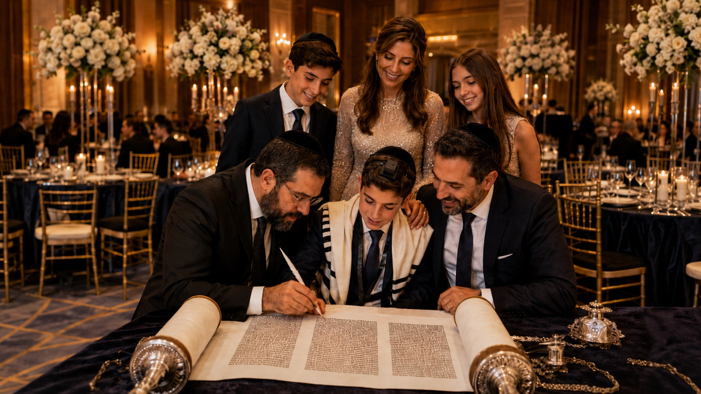
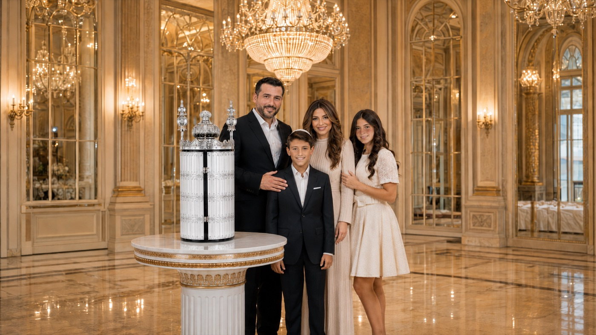
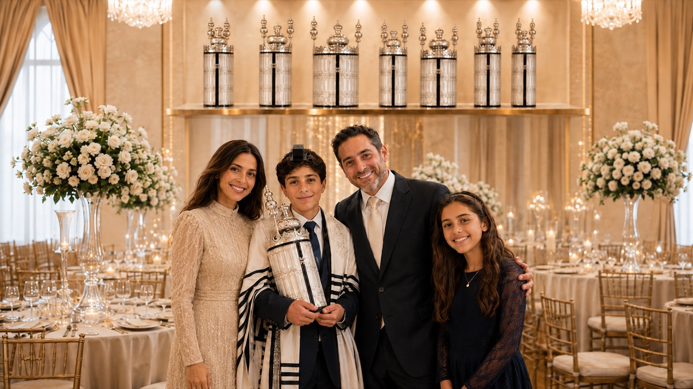

El proceso
Cuatro momentos, un legado
01
La escritura
El niño participa junto al sofer en un momento solemne y profundamente emocionante.

02
La entrega
Los padres le regalan su Sefer Torá, con una presentación digna de una ocasión única.

03
La lectura
El Bar Mitzvá sube a la tebá y lee de su propia Torá frente a su familia.

04
El legado
Después del evento, la Torá permanece en la familia: puede prestarse a un knis y tener el zejut de que se lea la Torá en él.
